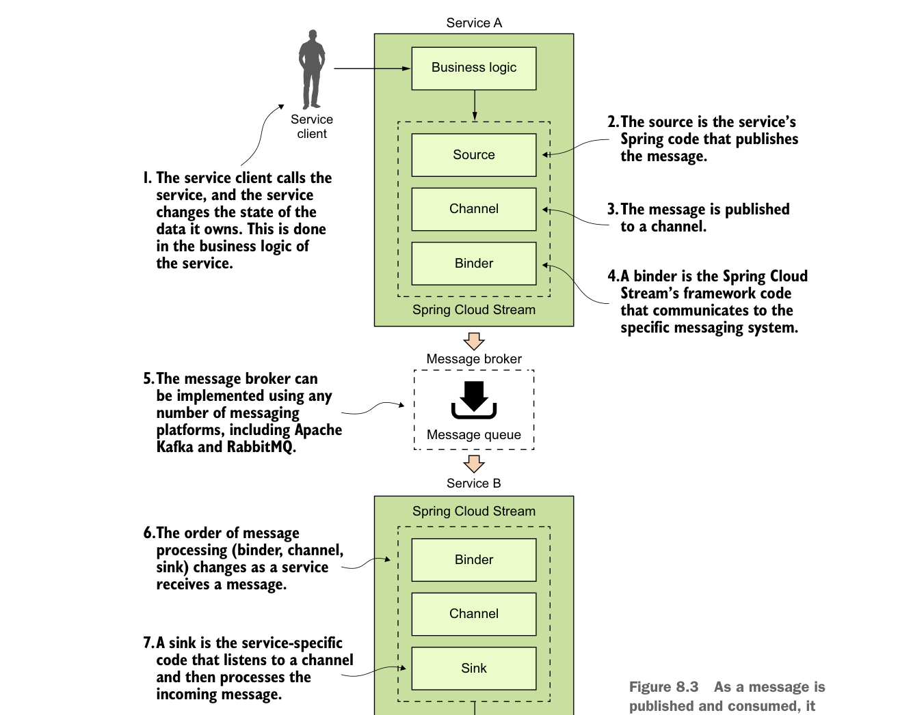

Để hiểu Spring Cloud Stream, hãy bắt đầu bằng phần thảo luận về kiến trúc Spring Cloud Stream và làm quen với thuật ngữ của Spring Cloud Stream. Nếu bạn chưa từng làm việc với nền tảng dựa trên messaging trước đây, lượng thuật ngữ mới có thể khiến bạn choáng ngợp.
8.2.1 Kiến trúc Spring Cloud Stream
Hãy bắt đầu phần thảo luận bằng cách xem xét kiến trúc Spring Cloud Stream qua góc nhìn hai dịch vụ giao tiếp qua messaging. Một dịch vụ sẽ đóng vai trò publisher message và một dịch vụ sẽ đóng vai trò consumer message. Hình 8.3 cho thấy Spring Cloud Stream được dùng như thế nào để hỗ trợ luồng truyền message này.

Khi một message được xuất bản và tiêu thụ, nó đi qua một chuỗi các thành phần Spring Cloud Stream che giấu nền tảng messaging bên dưới.